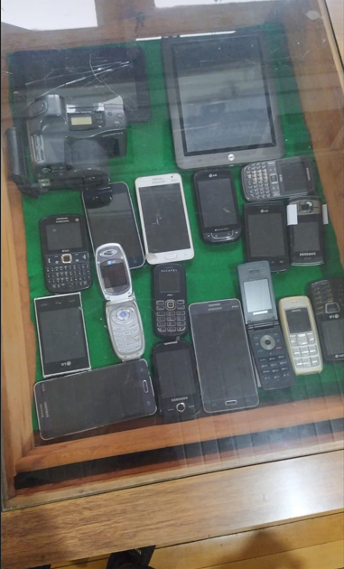

1° DSIS
A turma do 1° DSIS mergulha na fascinante história da computação, um campo que revolucionou a forma como nos comunicamos, trabalhamos e nos divertimos. Desde os primeiros dispositivos de cálculo até os sofisticados sistemas de inteligência artificial de hoje, a evolução da computação é um testemunho do engenho humano.
Nesta apresentação, os alunos compartilharão momentos-chave na evolução da computação, destacando invenções que mudaram o curso da tecnologia.
Jogos shooter e sua evolução
Integrante: Hussein Ali Awale
Tema:Jogos shooter e sua evolução
O que foi feito?
Uma demonstração de um jogo shooter em 3d, com cartazes explicativos para demonstrar a historia dos jogos shooter
Por que foi feito?
Para mostrar ao publico como foi a evolução de um dos subgêneros de jogos mais famosos
 - HUSSEIN ALI AWALE.png)
Segunda Geração de Computadores
Integrante: Alexandre Luis Lourenci
Tema:Segunda Geração de Computadores
O que foi feito?
Cartazes sobre IBM 1401, Transistores. Slides com a linha do tempo da geração e sobre as linguagens de programação COBOL e FORTRAN. Transistores e IBM 1401 feitos com materiais descartáveis.
Por que foi feito?
Queremos citar os principais marcos da segunda geração de computadores

Terceira geração de computadores
Integrantes: Fernanda Raquel Bertotti, Letícia Menegon Gonçalves, Yasmin Sheherazade Moreira Teixeira, José Augusto Santana Bogler
Tema:Segunda Geração de Computadores

Evolução dos celulares e da internet
Integrantes: André, Eduardo, Gabriel, Fabrício, Vinícius
Tema:Segunda Geração de Computadores
O que foi feito?
Maquete de computador para apresentação de um jogo, maquetes de circuitos transistorizados, cartazes e explicação.
Por que foi feito?
Para os alunos menores conhecerem o curso e entenderem sobre a história dos computadores e para os adultos relembrarem e conhecerem mais sobre a terceira geração de computadores.